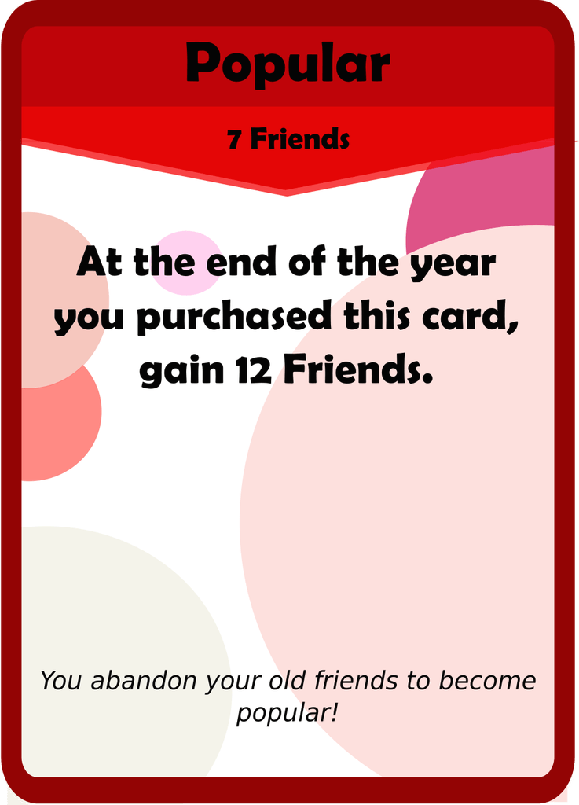
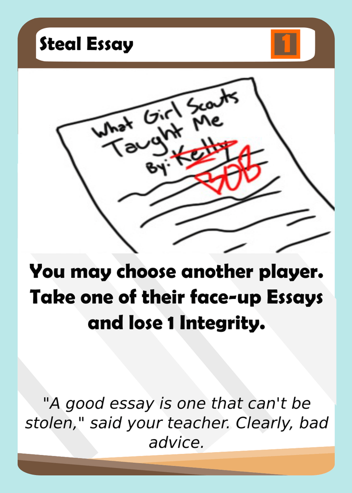
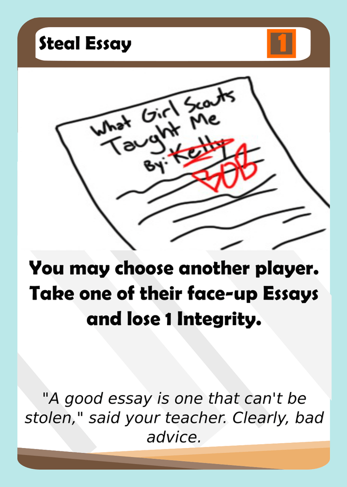

Hey everybody! I have some new balance changes and text clarifications for you. Let’s dive right in!
Popular gets a much needed buff here, going from a continuous effect to something more similar to Summer Programs. In the past, players rarely grabbed Popular, and even if they did it rarely was a good investment. It also was never a good choice to pick up Junior year, and overall was a terrible card. I think the real issue is that friends now are significantly better than friends later because of the engine building aspect of club cards. Hopefully, this change makes Popular more competitive.
Hide Homework is one of those cards that got an inadvertent buff from perfect grade bonuses. Due to perfect grade bonuses, this card allowed a player to completely ruin another player’s investment into their classes. This change is very small, but it now allows players to get an A in a class through other methods, such as cheating. This way, it isn’t as oppressive as it used to be.

The effect of Shadow Students has never been successfully pulled off before. Let that sink in. It’s an enticing card, but it is just too unrealistic to have straight A’s in 3 rounds. I’m sure that it is theoretically possible, but the conditions were definitely too strict. My hope is that this card will now be a more interesting decision as it will be a lot easier to get 3 A’s than 4 A’s.
I’m trying to remove all of the cards that use the word “give”, as it just becomes really confusing and is kind of unnecessary. In a lot of playtests, players have been giving eachother their cubes and were unsure on whether they should still get friends even if another player had no friends. Thus, this change.

It was not very clear that if you chose not to do the choose effect, you would not lose the Integrity.
 

Similar change.

Similar to Talent Show, Monopolize Lunch Table’s “Take” was unclear. I also like this effect more as it somewhat shifts the dynamic of Freshman year from avoiding stocking up friends to stocking up some- for Stud Gov Pres and now this card as well.
Let me know what you think of these changes! Thanks for reading, and make sure to subscribe if you enjoy this content.